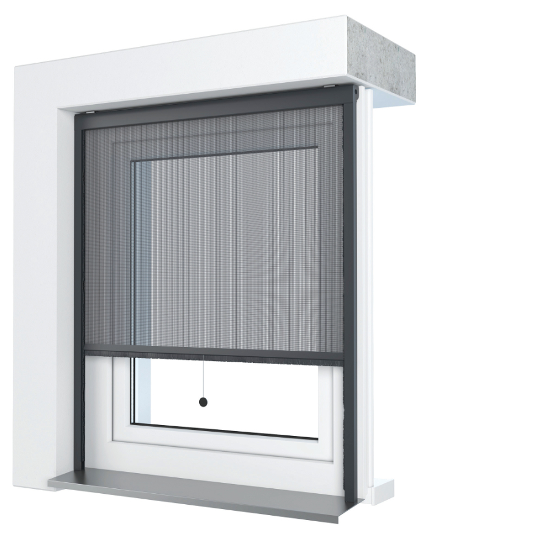
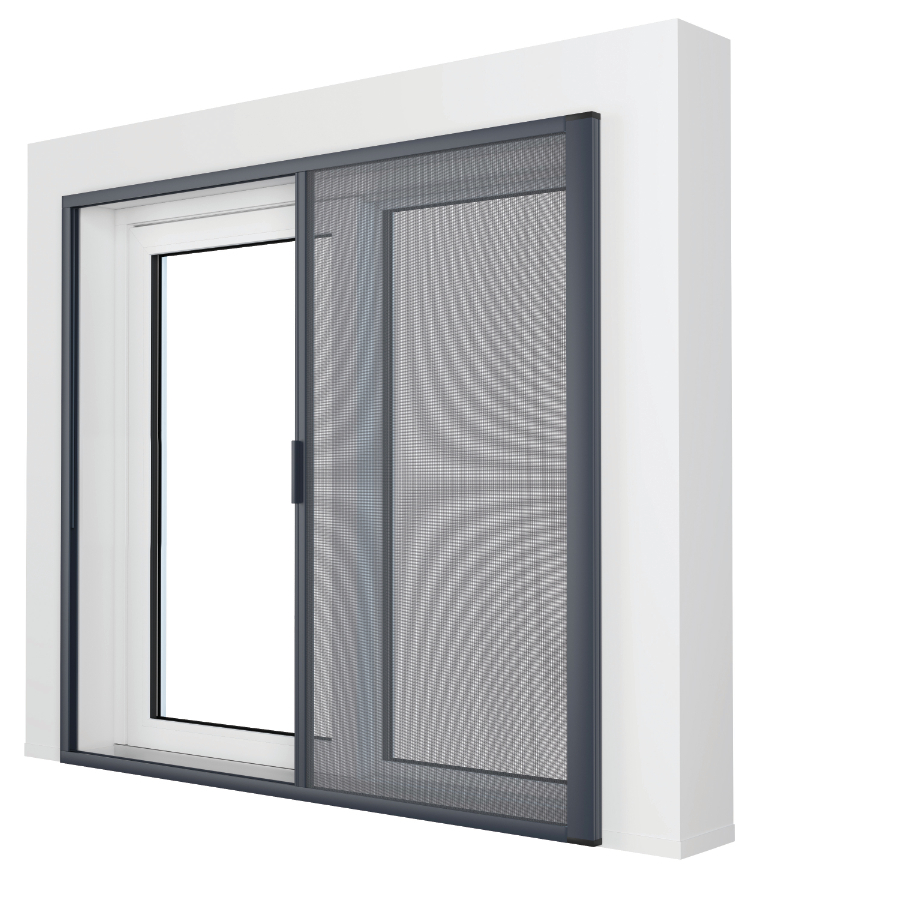

Rolovací sítě umožňují jednoduché otevírání a zavírání. Vybaveny zpomalovací brzdou pro tichý a plynulý navin. Barvu profilu lze zvolit dle rámu okna nebo dveří.

Pro jakýkoliv druh okna, velká variabilita montáže. Aretace koncovými dorazy nebo záchytnou lištou. Max. 2 000 × 2 300 mm.

Pro montáž na rámy i ostění dveří. Dorazová lišta držena magnetickou gumou. Max. 1 300 × 2 300 mm.
Barvy, vzorník látek a technické parametry všech modelů najdete na hlavní stránce nebo vám je ukážu při zaměření.
Cena se odvíjí od rozměru okna nebo dveří, zvoleného modelu a barvy či látky. Přesnou cenu dostanete v nezávazné nabídce po bezplatném zaměření.
Zaměření i montáž v okolí do zhruba 70 km od Jindřichova Hradce – jižní Čechy a část Vysočiny.
Chcete rolovací sítě na míru? Domluvíme zaměření zdarma.
Zavolejte na +420 606 643 865, napište na info@bidsolution.cz nebo vyplňte poptávkový formulář. Ozvu se do 24 hodin.